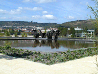
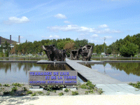
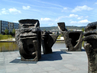
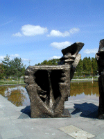
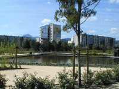
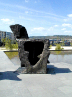

| |||||
|
| |||||
|

Place du 1er mai (cette page est ma première page avec pop-up... cliquez sur les images ! )



Entre Clermont et Montferrand tout bouge en ce moment ! La place du Premier mai qui avait des allures de terrain vague et qui recevait "marché aux puces" et fêtes foraines a été entièrement transformée. Dommage, ce n'est pas une fontaine mais seulement un "bassin miroir", les sculptures sont sensées se refléter dans l'eau. "Terrasses de la terre et de l'air"sculpture de Etienne Martin mise en place en 1989


Le Puy de Dôme apparait derrière le bâtiment. 